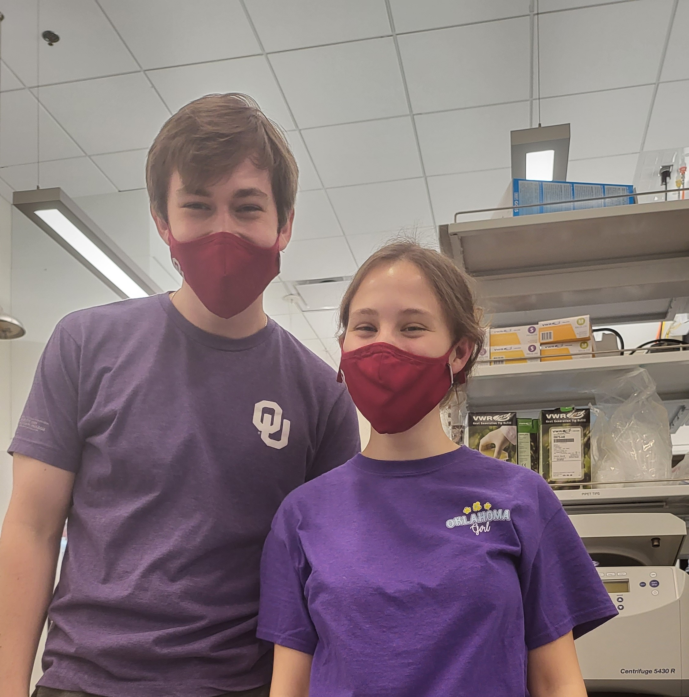
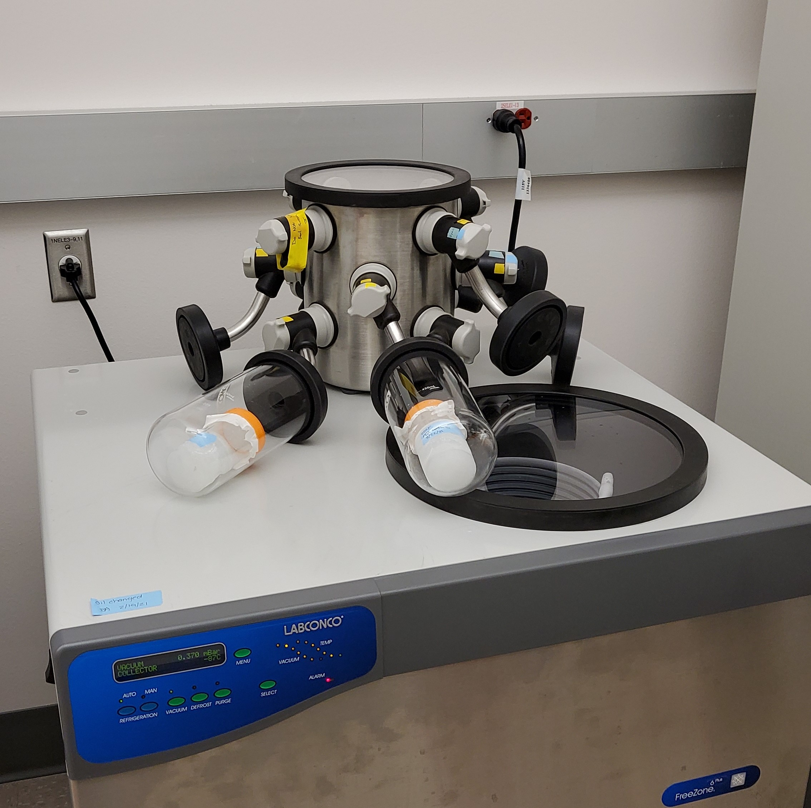

Endovascular Crosslinking of Pentenoate-FunctionaIized Hyaluronic Acid Hydrogels (PHA) for Occluding Cerebral Aneurysms
During my undergraduate years, I worked in a regenerative tissue engineering laboratory where I worked with an international student to utilize PHA hydrogels in a novel intravascular method of occluding cerebral aneurysms. Below depicts how this PHA hydrogel would be deployed to heal an aneurysm.
Project Details / Background
During my undergraduate studies in biomedical engineering, I worked on a project aimed at developing a novel method for occluding cerebral aneurysms. The approach involved using a pentenoate-functionalized hyaluronic acid (PHA) hydrogel, which would be deposited into the aneurysm through a catheter and then crosslinked using a pigtail diode that emitted 365nm UV light. Once crosslinked, the PHA hydrogel would occlude the aneurysm and promote healing of the cell wall. We also introduced tantalum powder as a radiopaque substrate to enable x-ray analysis and confirm the location of the hydrogel within the cerebral vessels.
Throughout the project, I performed rheological assessments, x-ray analysis, and flow rate analyses to evaluate the properties of the PHA hydrogel and ensure its efficacy in occluding the aneurysm. Additionally, we conducted cell culture studies to assess the cytotoxicity of the hydrogel using live/dead assays and DNA quantification assays. Our team, which consisted of an international master's student from France, two PhD professors, and one post-doctoral student, collaborated closely to develop and refine the project. Our efforts culminated in a successful presentation of our findings at our institution's undergraduate research day, where we were honored to receive the 1st place prize in the biomedical engineering track.
Research & Fun
Pictured is the aneurysm project team consisting of myself and Kéren Fraissard, as well as our advisor Rebecca Scott.
A work day underneath the cell culture hood, where we were synthesizing our PHA hydrogels, and prepping the HUVEC cells for the study.

This was a funny day when Kéren and I showed up to the lab matching!
 This is what the hydrogels looked like right after they were crosslinked using the 365nm UV light.
This is what the hydrogels looked like right after they were crosslinked using the 365nm UV light.
.png) Preliminary results from the cell study, where cells dyed green are living and cells dyed red are dead. (A. Control Group, B. 5 wt% PHA, C. 7.5 wt% PHA, D. 10 wt% PHA). Through this analysis, it was determined that the 10 wt% PHA hydrogel was too concentrated to support cell proliferation.
Preliminary results from the cell study, where cells dyed green are living and cells dyed red are dead. (A. Control Group, B. 5 wt% PHA, C. 7.5 wt% PHA, D. 10 wt% PHA). Through this analysis, it was determined that the 10 wt% PHA hydrogel was too concentrated to support cell proliferation.

lyo
scale
Preliminary result from the x-ray analysis, where the radiopacity of tantalum powder was tested after being introduced into the PHA hydrogels. The light rectangle is the PHA hydrogel and the white specks are the tantulum powder flakes.
testing apparatus